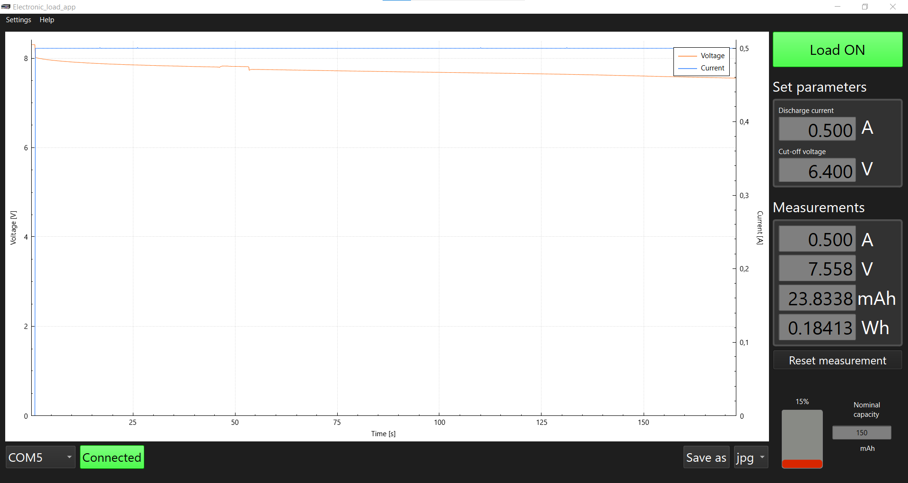

Software & Firmware
💾 Microcontroller Firmware
The heart of the electronic load is the custom firmware running on its ATmega328P microcontroller.
The firmware is written in C++ and was developed using Visual Studio Code with the PlatformIO extension. This setup is recommended as it simplifies managing the project's libraries and build configurations. While it's possible to adapt the project for other environments like the Arduino IDE, using PlatformIO is the most straightforward path.
Programming Options
There are two methods to upload the firmware to the microcontroller:
-
USB
This is the simplest method and uses the Micro USB port on the back panel. This connection utilizes the onboard converter board to communicate with the microcontroller's TX/RX pins.
Warning
This method will only work if the ATmega328P microcontroller already has an Arduino-compatible bootloader installed.
-
ICSP Programmer
This method programs the microcontroller directly. It is the primary way to:
- Upload firmware to a microcontroller that does not have a bootloader.
- Burn a bootloader onto the microcontroller, which then enables the simpler USB programming method.
This method offers two key advantages over using a bootloader. First, it frees up flash memory, which can be helpful given the memory constraints of the ATmega328P. Second, it reduces the device's startup time, as the firmware runs immediately on power-up instead of waiting for the bootloader's timeout period.
The main board includes a standard 6-pin ICSP (In-Circuit Serial Programming) header for connecting an external programmer, such as a USBasp.
Uploading with ICSP erases the bootloader
When you upload firmware directly using an ICSP programmer, it overwrites the entire flash memory of the microcontroller, including the bootloader. If you want to use the USB method again later, you will need to re-burn the bootloader using the ICSP programmer.
To use this method with PlatformIO, you must add the following configuration to your
platformio.inifile:upload_protocol = custom upload_port = usb upload_flags = -C ${platformio.packages_dir}/tool-avrdude/avrdude.conf -p $BOARD_MCU -P $UPLOAD_PORT -c usbasp upload_command = avrdude $UPLOAD_FLAGS -U flash:w:$SOURCE:i
Calibration Procedure
Video Guide Available
A complete video guide is available on YouTube. It provides a full walkthrough of the calibration procedure, including the required hardware setup, modifying the firmware, and using the on-screen menu.
To ensure both measurement (ADC) and setpoint (DAC) accuracy, a calibration routine is included in the firmware. This procedure only needs to be performed once, as the resulting calibration values are stored permanently in the microcontroller's EEPROM.
Memory Limitation
Due to the limited flash memory on the ATmega328P, the calibration function is disabled by default to make space for all the primary operating modes. You must temporarily modify the source code to access it.
Follow these steps to enable the calibration mode:
-
Enable the Calibration Menu: In the
main.cppsource file, find and uncomment thecase '6'block for the calibration function:case '6': calibration(lcd, userInput, keypad, encoder, measurements, controls); displayMenu(lcd); break; -
Disable Another Mode: To free up enough memory, you must temporarily comment out another mode. For example, you can disable the Transient Response Mode:
// case '4': // transientResponseMode(lcd, userInput, keypad, encoder, measurements, controls, transient); // displayMenu(lcd); // break; -
Upload and Calibrate: Compile and upload the modified firmware. The calibration menu will now be accessible by pressing
6in the main menu of the load.
Important
After you have completed the calibration, you must revert these changes (re-comment the calibration block and un-comment the mode you disabled) and re-upload the firmware to restore full functionality.
🖥️ PC Application
To complement the electronic load, a dedicated desktop application is available. The application currently focuses on enhancing the Battery Test Mode, with potential support for other operating modes in future updates.

The PC application interface during a battery discharge test.
Key Features
- Remote Control: Set the battery discharge current and the cut-off voltage directly from the application.
- Real-Time Visualization: View live plots of the battery's voltage and current throughout the discharge test.
- Data Export: Save the recorded discharge graph as a JPG image or export the raw measurement data as a CSV file for further analysis in other software.
- Multi-Language Support: The user interface is available in English, Polish, and German.
Technical Details
The application communicates with the electronic load via a serial connection through the Micro USB port. It was developed in C++ using the Qt framework, which allows it to be cross-platform.
Availability
Windows Users
A pre-compiled, ready-to-use version for Windows is available for convenience in the project repository at:
desktop_app/release/windows-64bit/electronic_load_control_app.exe
Linux and Other OS Users
Since the application is built with the cross-platform Qt framework, it can be compiled for other operating systems like Linux. The full source code is available in the repository for users who wish to build it themselves. Pre-compiled binaries for Linux may be added in the future.